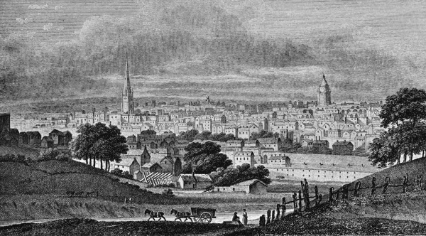

Geschiedenis
Birmingham kent zijn plek al vanaf de stroomculturen. Rondom birmingham lagen kleinere boerendorpen. In de romeinse tijd liep hierdoor een belangrijke handelsweg. Nadat de Romeinen vertrokken, bleef het gebied lang dunbevolkt, wegens een ongeschikte bodem voor intensieve landbouw.
Na de verovering door de Noormannen werd het gebied bestuurd door een familie genaamd De Birmingham. Zij lieten daar een klein boerendorp oprichten. Deze familie heerste over het gebied tot 1527, toen de hetrog van Northumberland het leen overnam.
Vanaf de 15de eeuw werd het een centrum van metaalbedrijven en wapensmeden. Als Birmingham een kans wou hebben op de exportmarkt, moesten er producten van hoge kwaliteit geleverd worden, omdat het centraal in het land lag.
In de beginjaren 1800 werd er een vertakt netwerk van kanalen aangelegd, waardoor de groei toenam. Rond het jaar 1830 werden er spoorwegen naar London, Liverpool en Manchester aangelegd. Hierdoor werd Bimingham New Street het belangrijkste station van het land
Wil je meer weten over de geschiedenis van Birmingham? Ga dan zeker eens een bezoekje brengen in het Museum & Art Gallery van Birmingham!
Cultuur
Qua cultuur heeft Birmingham verschillende theaters, museums en gallerijen, maar ook concertzalen. Deze stad speelde een pioneersrol in de grafitti- en hiphopcultuur.

Er vinden talrijke culturele evenementen plaats, bijvoorbeeld het Birmingham Film Festival, de militaire taptoe Birmingham Tattoo en de op drie na grootste parade ter wereld ter gelegenheid van St. Patrick’s Day (na Dublin, Londen en New York).
Bezienswaardigheden
Birmingham heeft tal van mooie bezienswaardigheden, hier zijn een aantal bezienswaardigheden die echt de moeite waard zijn.
Zo is er het Birmingham Museum & Art Gallery, waar we het al in ons gedeelte van de geschiedenis van de stad hadden. Je kan ook een kijkje gaan nemen in de Birmingham Botanical Gardens, waar je de mooie plantjes kan bezichtigen.
Voor de kunstliefhebbers onder ons is er The Barber Institute of Fine Arts. Dit is een museum met werken van grootschilders zoals Van Gogh, Rodin, Picasso en Monet. Ook voor spoorwegliefhebbers is er het New Street Station, dit is een van de grootste spoorwegstations van het land die maar liefst ruim 25 miljoen passagiers per jaar over de vloer krijgt.
En ook voor de hele familie is er het National Sealife Centre, met zijn reusachtige zoet- en zoutwareraquaria. Ook een heel interessant museum om te bezichtigen is het Birmingham Thinktank technisch museum. Met onder meer de oudste nog werkende stoommachine ter wereld die gebouwd was in 1779 door James Watt.
Als u naar een zeer mooi winkelcentrum wil gaan, moet u naar de Bullring gaan. Dit winkelcentrum heeft een zeer speciale vorm zoals u kan zien op bovenstaande foto. Hierin kan u twee verschillende winkelcentrums vinden.
Aanraders
Als u wilt overnachten in Birmingham dan is dit het hotel dat u moet boeken. Hotel La Tour heeft naast zijn strakke uiterlijk ook een zeer modern en stijlvol interieur. Het hotel heeft hiernaast ook gratis wifi en airconditioning, een echte aanrader dus!
Als u eens graag goed op stap wilt gaan in Birmingham kan u beter naar The Bristol Pear gaan. "Wicked little student pub" klinkt het volgens de recensies. Dus als u misschien heimwee hebt naar uw studentenperiode, is het geen slechte keuze om deze pub eens een bezoekje te brengen.